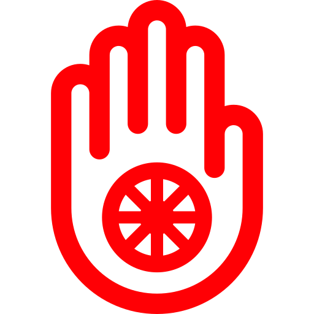

Taurus (Apr 21 - May 21)
Sign Overview
Taurus is the Fixed stage of the Earth element and is ruled by the lunar side of Venus. This means that they use their powers of collecting similar things (Venus) to gather and stabilize (Fixed) materialistic objects (Earth Element).
It is the energy of Venus that makes them soft-mannered, love music, love beauty, and love people. The Fixed stage is what makes them confident and capable to achieve their materialistic stability. It also is the cause of their hatred towards starting something anew and changing old habits that have proven to be effective to them. The Earth element is what makes Taurus so sensual, love earthly pleasure, stubborn, slow to move or change, quiet, easy-going, and retain emotions for a long time.
Taurus main focus in life is to achieve life security and for that they make sure that they have three aspects intact: stability, possessions, and nutrition.
Taurus main focus in life is to achieve life security and for that they make sure that they have three aspects intact: stability, possessions, and nutrition. Stability is important as the daily schedule, work, home, and loved ones remain constant day in and day out so that they know their life is secure. Possessions are important to security because the best way to turn something uncertain into certain is by owning it. Nutrition is important because it stabilizes their bodies.
Symbol Meaning
Taurus' symbol is a bull. This represents the fact that they are simple, like the comfortable home environment, like nature, need to be fed well at all times, not aggressive, have a great memory, are very sensual, are highly reliable, and have a serious manner. Taurus are also equipped with a great amount of patience. But be careful! If they do get angry (a rare occurrence), they will charge at their target at full force like a raging bull.

Karmic Stage
Taurus are the "Baby" stage in the Astrological Karmic Cycle. Right after the "New Born" stage of Aries that need to scream to get what they want, the "Baby" is confident that the world will provide him his basic needs. This is represented by Taurus' calmness, long patience, love of babies/cute things, and strong desire for affection. Their main mantra in life is "I possess".
Taurus goals in this karmic stage are to teach that "love is patience" and to learn that "love is to forgive". Their patience with matters and people is unmatched but if a person upsets them, their discontent will last very long. Therefore Taurus would be wise to learn how to forgive and forget in order to release that contempt.
Strengths vs. Weaknesses
Determination that can turn into stubbornness. Persistence that can turn into unwillingness to change. Patience that can turn into slow movement. Rationality that can turn into irrationality. Efficient management that can turn into controlling. Sensuality that can turn into gluttony. He is very musical (music soothes the beast) and usually has a pleasant voice or plays a musical instrument very well. He is very strong physically and rarely gets sick.
Good Paths in Life vs. Pitfalls
Taurus' strong determination and patience can help them stay steady on the path to success. The same traits can also cause them to stick to their own stubborn ways, think inside the box, not adapt to changes, and consequently crash into a wall that could have easily been avoided with a few modifications. Therefore Taurus would be wise to pause at times and get a second perspective or a different opinion from others. Their warm and soft heart makes people love them for the sweet, kind person they truly are. The same heart causes them to get hurt easily from people close to them and tends to take other people's actions personally.
Taurus have a great memory and remember things well. This great memory also makes it difficult for them to forget the "bad things" people did to them. Therefore Taurus would be wise to be cautious of who they put their trust/emotions with and learn to let go of their pain. They are great at managing things and people around them and making those people and things work efficiently. That same trait causes them to be controlling and strangling in their relationships. Taurus would be wise to learn to give people their freedom to be/act as they wish and incorporate their plans around that.
Likes / Hobbies
Taurus love their comfort and sensuality and everything that provides these for them. Soothing music and comfortable clothes that make them look good are very popular with Taurus. They love food, especially fatty foods like steak, chocolates, and creams. Taurus' love for food is both physical and spiritual: food makes them feel so good both emotionally and physically. Taurus love their homes and love to furnish them with their possessions, which are usually very big in size.
Taurus' love for food is both physical and spiritual: food makes them feel so good both emotionally and physically.
They love to be surrounded by their possessions and the people who appreciate them because that gives them assurance. Taurus love to be touched and caressed softly. They work hard and like their peace and quiet time, so please, just give them some and understand. Taurus like to collect wealth and be financially stable, then use this money to buy themselves more comfort and pleasure. Taurus love nature and the earth and have a longing to live somewhere pastoral and natural; like a farm, for instance.
Dislikes / Pet Peeves
Taurus hate fast changes and starting things over again. They hate irresponsibility, dishonesty, disloyalty, and wasting energy for no reason. Taurus usually dislike loud-mouthed people that talk a lot. They believe that rules were made to protect everyone and ensure stability and therefore hate breaking the rules and causing trouble or people who do so constantly.
Taurus hate being bossed around or controlled (even though they might do so themselves). They hate being disturbed during their quiet time and the act of someone invading their "territory" can drive them mad. Taurus is very territorial and keeps a vigilant watch over their "space", loved ones, and properties.
How to Approach a Taurus
Taurus are naturally mistrusting and careful of others. Therefore one must approach a Taurus gently, making sure not to overstep one's boundary by asking personal questions that revolve around his intimate matters of life such as his love life, his financial matters, etc. Loud talking and public spectacles are also a wrong way to approach the quiet, calm Taurus.
Although they show little or no emotions, they are very sensitive and their feelings can be easily hurt. Therefore one must choose their words carefully when speaking to a Taurus about personal matters. Trust is extremely important to them because it resonates with their need for stability. If Taurus deem someone deceitful or incompetent, that person has a very small chance of regaining their trust. Once one has gained the trust and favor of a Taurus, one will find them to be a very honest, caring, and dependable friend. Taurus like to be touched by their loved ones and communicates a lot through touch.
One must be aware of the Taurus' tendency to control their surroundings and the people that surround them. Their intentions are purely helpful and not to be disrespected. If one is experiencing difficulty with this or any other of their behaviors, one must make sure to tell them in a gentle manner. A soft touch, compassionate eyes, friendly smile, and a polite request can achieve almost anything with a Taurus. Anger, arguments, blame, criticism etc. will result in Taurus becoming very stubborn and defensive. Taurus rarely argues their point or way, they just does what they feels is right and disregard the rest.
Love and Romance
Taurus are motivated fully by their need to give and receive physical stability and security. They do not have a true sense of themselves until they connect themselves to their surrounding and their close relationships. Taurus do so by providing their loved ones with physical security such as protection, food, finance, etc. in a hope that they will be treated well in return.
Taurus are very easily hurt emotionally and want someone who will be gentle with their feelings.
Taurus are very easily hurt emotionally and want someone who will be gentle with their feelings. They also want someone that they can provide for and call their "own", thus connecting to him/her. Since Taurus seek to gain stability, it is very likely that a female Taurus will want someone with a solid job and financial stability. The male Taurus will look for someone who can care for him on a more physical level such as cooking, cleaning, etc.
Both sexes will like someone who is outgoing and independent yet will stay away from loud and out of control individuals or ones that are promiscuous/not trustworthy. Both sexes like a strong minded mate yet would like to maintain control at all times. Someone sensual like them is a big plus. Taurus usually do not initiate the first move in relationships; they wait for the right opportunity.
Key Words
Patience. Stability. Sense. Reasonable. Rational. Mine. Security. Comfortable. Reliable. Responsible. Honest. Feel.
Tidbits
Taurus represent the neck and throat which support the most important part of the body, the head. Their lucky color is green, their lucky stone is emerald, their lucky number is 2, their lucky day is Friday, and their lucky metal is copper.
Other Signs

Aries
Mar 20 - Apr 20
Taurus
Apr 21 - May 21

Gemini
May 22 - Jun 21

Cancer
Jun 22 – Jul 21


Sagittarius
Nov 22 - Dec 21

Capricorn
Dec 21 - Jan 20

Aquarius
Jan 20 - Feb 18

Pisces
Feb 18 - Mar 20